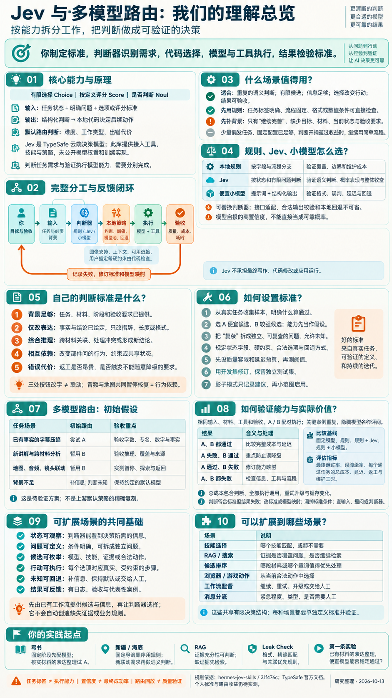

接入与编排工具
Python 工具、CLI、技能、Hermes 插件与面板，把小决策放进 Agent 的工作流。
HERMES JEV SKILLS
把 Agent 中的有限判断接入 Jev，
让主模型和工具完成任务。
库提供接入与策略，Jev 提供判断。
我们借鉴能力拆分，用验收决定是否值得。
按任务需要的能力拆分工作，把“如何选”做成可验证的决策。
底层选规则、Jev 还是便宜小模型，要看自己的任务和实测结果。
Python 工具、CLI、技能、Hermes 插件与面板，把小决策放进 Agent 的工作流。
按给定状态与问题返回选择、评分或是否概率。库里没有它的权重和训练实现。
设计自己的标准、规则和模型映射；验收成果，再决定是否需要判断模型。
任务的难度、类型与错误代价 → 本地策略选执行模型。
任务与技能描述 → 选技能或不选，宿主负责加载。
筛结果、判断是否足够、选候选查询 → 检索器与主模型继续工作。
从候选片段或轮次中判断保留价值 → 本地代码组织上下文。
按分类定义判断紧急度、队列和是否需人工 → 工作流分派。
从预先允许的动作中选下一步，或监督重试与升级 → 工具执行。
接入方向依据固定版本的 上游 README ↗ 与模块。各宿主的启用方式不同；默认交接流程并不依赖 Jev 筛选。包含某项能力，不等于每个环节都应使用它。

能力从有限选项中选择、按定义评分、判断是否满足条件。
原理提供状态和标准，得到结构化判断，由代码决定后续动作。
价值减少重复判断，尝试让合适的执行模型处理合适的任务。
边界判断任务需求不等于验证模型能力，路由合理也不等于成果合格。
先看上游实际接入，再看我们如何扩展。Jev 的一个答案，需要其他组件落实成结果。
Jev 返回依据，调用方落实选择。Hermes 可换模型，但不会自动更换供应商连接；其他 Agent 使用技能 / CLI 不等于具有相同自动路由。详见 插件源码 ↗。
下面的五层是个人设计建议：固定分支先用规则，有语义歧义再比较判断模型，最后验收整项任务。
哪些输出算通过，哪些需求需要综合推理，哪些错误不能接受，以及可用哪些模型。
面对提供的任务和背景，按标准回答问题。固定字段可用规则，语义歧义可交给 Jev 或小模型。
结合判断、模型能力、上下文、图像支持、风险约束和默认回退，选出具体执行模型。
撰写内容、分析源码、修改代码、运行检查。地图、音频与镜头的同步由应用代码执行。
按同一套验收要求看质量、费用、耗时和返工；识别错误发生在哪层，再调整。
| 三个概念 | 分别回答什么 | 导览例子 |
|---|---|---|
| 场景架构 | 谁观察、谁判断、谁执行、谁验收？ | 任务 → 判断器 → 策略 → 执行 → 浏览器验收 |
| 判断标准 | 怎样识别这个任务的需求？ | 是否改变地图、音频、镜头间的共享进度？ |
| 路由策略 | 识别之后采取什么行动？ | 有依赖暂用 B；只整理字幕试 A；缺背景补信息 |
我们先定义依赖标准，Jev 按标准识别任务；策略暂选 B；执行模型修改代码；浏览器检验进度一致。识别、选择、修改和验收各有负责人。这是个人方案示例，未真实调用模型。
仓库提供接入工具、技能、Hermes 插件和本地策略。Jev 本身是 TypeSafe 的云端决策模型，仓库没有它的模型权重与训练实现。其他小模型可以替代判断角色，但需要适配和验证。
库作者已经提供默认标准。接入自己的业务时，我们复用或修改它们，再用数据修订；不必每次临时制定一套。
告诉 Jev 当前任务、可选项和含义。拆成尽量独立的问题，避免把多个要求混成一句“是否复杂”。
按给定问题返回选择、评分或“是”的概率。厂商描述了校准训练思路，内部权重和训练数据未在本仓库公开。
阈值、风险、能力约束和模型池决定实际路由。不能仅凭一个分数就断言哪个模型能完成。
| 默认路由的问题 | 如何定义 | 如何影响路由 |
|---|---|---|
| 完成它有多难？ | 机械 / 常规 / 需要规划协调 / 专家 | 映射到 simple、medium、hard 档位 |
| 主要是什么工作？ | 代码 / 写作 / 研究 / 通用 | 在该档位中查找对应模型池 |
| 出错的代价高吗？ | 错误是否昂贵或难以撤销 | 结合本地风险规则，避免过度降级 |
普通低置信度路径的阈值是 0.6；降到最便宜档位需要 P(机械任务) ≥ 0.7，且 confidence ≥ 0.85；P(较难两级) ≥ 0.6 可进入 hard。风险、隐私模式、上下文与模型可用性还能改变选择。
默认发送当前请求脱敏后的约 2,500 字符，长文本通常保留开头与结尾，并不发送完整历史、文件和工具结果。“继续完善”这样的请求，需要你在自有方案中补充真实目标、当前状态和验收要求。
这些是该 commit 的默认值，应该在自己的开发集上重新验证。Hermes 插件可换模型，但不能直接换已有的供应商连接；用户固定模型优先。Codex 技能和 CLI 不等于相同的自动路由中间件。
Choice / Score 的 confidence 是判断答案分布的集中程度。Noul 返回“是”的概率，没有另一个独立 confidence。任务判断、概率校准和最终任务成功，是不同的验证对象。官方说明 ↗
同一套应用，任务的能力需求可以完全不同。选择任务和判断方式，观察分工。
把已经审核的导览字幕压缩到每条 30 字以内，保留地名和数字，不增加新知识。
背景：原字幕与事实已提供。A / B 是待实测的执行模型候选。如果入口已经标明“已审核字幕压缩”，且有原文与长度要求，代码可直接选择 A；无需再让模型判断。
任务性质：仅改表达；无新推理；无联动修改。
A 能否合格，需要与 B 配对实测。
执行模型压缩字幕 → 检查字数、专名、数字与事实 → 不合格时记录失败，再按既定策略返工或升级。
这里没有预设 Jev 比规则或小模型更准确。同一标准可能得到相同选择；差异要通过真实任务测量。
把标准当成可检验的假设。开始只需要两个执行模型和少数清晰问题。
| 任务 | 完成标准 | 初始路由假设 |
|---|---|---|
| 字幕压缩 | 字数符合要求；保留事实、数字、专名；无新结论 | 可以试 A |
| 项目研究 | 结论有源码依据；分清上游、本地改动与未验证事项 | 已有结论整理试 A；新分析暂用 B |
| 导览联动修改 | 地图、音频、镜头进度一致；暂停与返回正常 | 相互依赖暂用 B |
三处按钮文字修改，未必需要联动协调。地图与音频共享暂停、恢复进度，则存在真实依赖。
下方是我们设计的初始策略，用本地代码演示；不是上游默认路由，也没有真实预测概率。
背景完整，明确只改表达，且没有综合推理、联动或高代价条件。
“需要推理就暂用 B”只是起点。若 A 在这类任务中同样稳定通过，就应修改映射；若 B 也失败，应先检查信息、工具、验收和工作流程。某个判断不会改变实际行动时，可以省去这一问。
让 A、B 真正完成同一任务，才能知道哪些任务值得降级，哪些必须避免。
保存真实输入、必要材料、工具、模型版本和“通过”的定义。先定质量容限与延迟预算。
A、B 用相同材料与工具完成任务；关键或不稳定案例重复运行。分别记录判断是否符合标准与结果是否通过。
改标准和阈值只用开发集；留出独立测试集。覆盖真实任务比例，也补充高代价与边界情况。
固定默认模型、规则、规则 + Jev、规则 + 小模型。影子模式先记录建议，评测后再小范围切换。
优先比较完整费用与耗时，通常可尝试便宜的方案。
这类任务选 A 会误降级。它比“便宜模型使用比例”更值得关注。
较强候选并非每项都强，按任务重新选择模型池。
补信息、改工具或重新拆分，单纯升级可能无效。
| 指标 | 如何算 / 如何记录 | 为什么看它 |
|---|---|---|
| 最终通过率 | 最终通过任务数 / 全部任务数 | 节省费用前，先满足质量要求 |
| 误降级率 | A 失败、B 通过的任务中，路由选 A 的比例 | 衡量不该降级时是否降了级 |
| 每个通过任务的总成本 | 判断 + 执行 + 重试 + 升级 + 缓存变化，再除以通过数 | 避免只比较单次调用价格 |
| 延迟、返工与维护 | 完整完成耗时、人工返工、规则和提示维护工时 | 费用降低不一定代表总体收益 |
标准被正确应用，但 A 做不好：标准或模型能力映射有问题。
标准要求选 B，判断器却漏掉联动：背景、问题定义或语义判断有问题。
下载空白 CSV；每个任务一行，记录配对结果、路由和完整费用。
上游 replay 只调用 Jev，不运行所选执行模型。它能观察路由与估算成本，不能证明最终质量。几十条案例能发现问题，无法证明罕见错误已经受控。原文 ↗
三种方式都可以应用你的标准。需要比较的是完成整项任务的收益。
| 比较项 | 本地规则 | Jev | 便宜小模型 |
|---|---|---|---|
| 怎么判断 | 标签、字段、格式、流程阶段 | 状态 + 有限问题 + 标准 | 提示词 + 结构化输出 |
| 适合什么 | 固定任务、硬约束、可穷举分支 | 重复的有限语义判断 | 灵活的语义解释，复用已有模型服务 |
| 主要成本 | 规则维护与覆盖例外 | 接口调用、延迟、集成与评测 | 调用、格式校验、提示维护与评测 |
| 重点验证 | 边界与漏判 | 自有任务的判断质量与概率表现 | 格式稳定性、误判与总成本 |
| 失败怎么办 | 规则兜底或转人工 | 本地回退，通常保持当前模型 | 格式拒绝、重试或回到默认模型 |
固定任务先走规则 → 有语义歧义再比较判断模型 → 缺信息先补背景 → 用验收结果决定保留哪种方式。
保留任务状态、判断标准和本地策略，换一个判断适配层。让小模型返回有限字段，例如“仅改表达”“需要综合推理”“存在联动”“未知”，验证合法值，遇到格式错误或不确定按既定策略回退。
不要伪造高置信度来通过 Jev 风格接口，也不要把小模型自报的 0.9 当成真实成功概率。先比较确定的类别判断，阈值与概率表现另行评测。
候选可以来自已有的低价云端模型或本地小模型。我们尚未在个人路由任务中完成实测，所以没有证据宣布哪一个“最好”。模型价格、版本与结构化输出支持需要在选型时重新核对。
任务偶发、模型费用本来就低、固定配置已覆盖大多数情况时，保留规则通常更容易管理。
这些是基于我们研究经历提出的拆分方案，尚未在对应项目里接入路由。
目录、标题、章节是明确阶段，可先直接配置模型。已有材料的改写尝试 A；目录覆盖与全书一致性单独验收。
批准的播放顺序直接执行。新需求如果影响共享进度或多个部件，暂路由 B；帧更新与同步由应用代码负责。
提供实际证据与覆盖标准，再判断是否足够回答；不足就继续检索，不能靠判断器补出不存在的事实。
格式识别、精确匹配与既定关联由规则完成。模型说明只能整理已验证的脱敏结果，不能推断同一身份。
你已经在记录项目的阶段、材料、约束和验证结果，可以据此先建立规则基线，再找值得委托的语义判断。先证明一个便宜执行分支确实能做好，才有依据研究自动路由的收益。
可迁移的是决策分工。换行业或换模型之前，先确认判断有足够依据、后续动作可执行、结果可检查。
任务、材料、当前进度和约束真实可用。
模型、技能、队列或动作来自明确候选。
选项含义与边界明确，允许未知。
代码或工具能把选择落实成动作。
超时、非法值、缺信息和重试有去处。
能分辨通过与失败，记录费用和返工。
| 可以扩展到哪里 | 有限判断 | 执行与验证 |
|---|---|---|
| RAG 证据 | 足够 / 不足 / 未知 | 提供实际段落与覆盖清单；不足继续检索，最终逐项验收证据。 |
| 技能选择 | 某技能 / 无需技能 | 宿主加载可用技能；检查是否实际帮助完成任务。 |
| 重试与升级 | 继续 / 重试 / 升级 / 补信息 / 结束 | 结合检查失败与次数；工作流限制循环，记录最终通过与完整费用。 |
| 交付检查 | 通过 / 缺项 / 未知 | 先做确定性检查，再比较语义缺项判断；草稿必须对照核实材料。 |
| 消息分流 | 队列 / 人工 / 未知 | 按分类和时效要求分派，检查漏分与错分。 |
| 有限方案 | 预先批准的方案 / 暂停 | 选择布局或动作后，由渲染器和工具执行，检查兼容性与结果。 |
此处是可扩展方案清单，交付检查等不宣称为库内已安装的完整能力。有限选项也可能需要语义理解；允许列表只限制可选动作，并不证明所选动作正确。每个新场景都要单独验证。
网页为本次讨论的原创整理。架构与个人场景是研究说明，全部交互为本地教学模拟；没有真实模型调用、任务运行日志或效果排名。未复制上游图片和模型代码。上游版权与许可见 MIT License ↗。